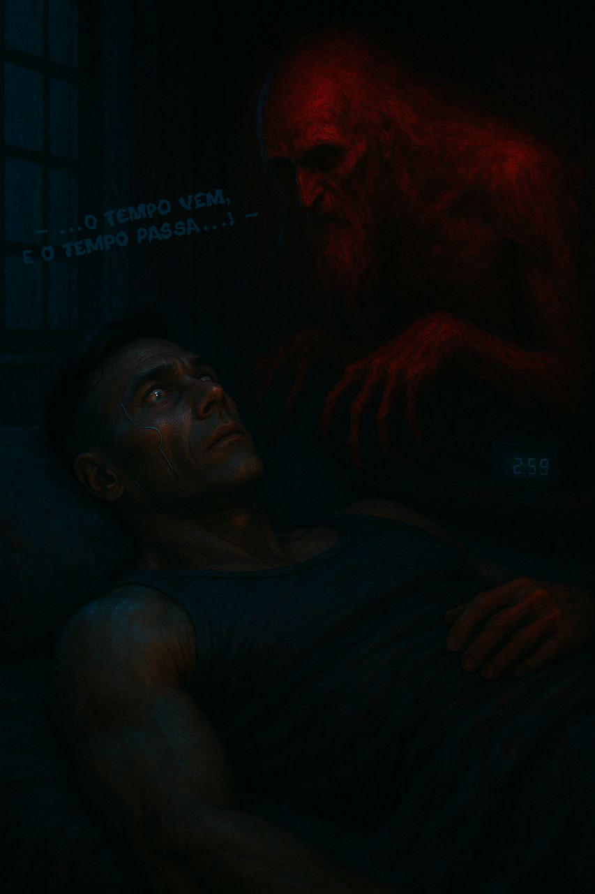
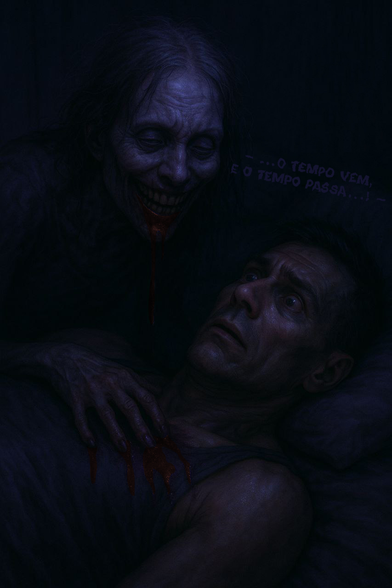

Complicações
Após o banho, entrei no quarto. Ela já estava deitada do seu lado da cama, quieta. Na verdade aquele dia me pareceu muito silencioso. Aquela noite... quieta.
Parecia que sequer existia.
Não se ouviam os sons dos carros ou dos cães, nem os jovens da rua berrando uns com os outros pelas janelas dos prédios. Nada. Achei melhor me deitar também. Sentei na cama — ela já dormia —, me acomodei e apaguei. 
— ...O tempo vem, e o tempo passa...! —
Abri os olhos, assustado. Ouvi essa frase dita por uma voz calma e arrastada. Fiquei completamente arrepiado. Olhei para trás: ela ainda estava dormindo. Virei-me para o relógio — marcava duas e cinquenta e oito. Senti uma vontade enorme de ir ao banheiro, mas lutei contra isso. Havia algo diferente no ar, como se o quarto estivesse cheio de criaturas... ou energias individuais, indo de um lado para o outro — todas invisíveis. Ainda assim, não consegui me segurar, precisava ir. Foi quando me sentei na cama... e tudo parou.
Senti meu corpo arrepiar novamente, e meus ouvidos se entupiram, como se minha cabeça estivesse debaixo d’água. Ouvia apenas um apito distante, e um medo furtivo começou a crescer dentro de mim. Um profundo desespero tomou conta, e me deitei rapidamente.
“VÁ EMBORA!” — pensava, como se estivesse gritando mentalmente contra o que quer que estivesse acontecendo. Estava suando frio. Meus ouvidos continuavam entupidos, e parecia que algo me forçava a sair do quarto. Da casa. Meus olhos se moviam inquietos por trás das pálpebras. Mal conseguia mantê-los fechados para tentar dormir. Então os fechei com força, tentando me livrar daquilo que sentia.
Abri os olhos, o relógio marcava duas e cinquenta e oito, agora tudo estava normal novamente.
- - Diabos, tudo foi um sonho novamente? Susurrei apenas para que eu mesmo ouvisse.
Senti uma mão passando sobre a minha cintura, como se fosse ser abraçado. Uma mão fria que óbviamente intui ser de minha esposa. Quando olhei para baixo e tentar vê-la, não havia mão. Olhei para trás, ela ainda estava dormindo... Eu olhava para a janela tentando pensar em algo para me distrair, mas não conseguia pensar em nada. Novamente senti a mão sobre a minha cintura. Dessa vez, coloquei a minha mão sobre ela, a segurei! Dei um sorriso,
- - Isso lá é hora de brincadeira amor? - Me virei, aliviado.
Ela ainda estava dormindo. A mão não estava mais sobre a minha. Mordi os lábios com força. Desta vez, meu corpo estava completamente frio — como o de um cadáver. Tentei me concentrar. Comecei a pensar: “Talvez seja apenas mais um sonho!” — e procurava, em vão, me afastar da sensação sufocante de medo e angústia que me envolvia. Fechei os olhos... A mão. Novamente a mão em minha cintura!
Mas desta vez senti uma respiração leve perto do ombro. Um sorriso... como o de alguém que estivesse aprontando algo. Pensei aliviado: “Finalmente o sonho acabou! Finalmente!”
Segurei a mão e me virei abruptamente. Uma criatura estava atrás de mim. Era uma espécie de mulher grotesca, com olhos brancos e leitosos, e um sorriso amarelado, manchado por tons vermelhos quase negros — como sangue coagulado escorrendo de sua boca. Seus cabelos, finos e ralos, pareciam prestes a cair. Ela me olhava fixamente com aquele sorriso, imóvel. No entanto, parecia morta. Senti-me paralisado. Não conseguia me mover!
Tentei gritar, mas nenhum som saía — apenas murmúrios abafados de pura agonia, enquanto ela aproximava o rosto do meu. O sangue escorria de sua boca e pingava sobre a cama... sobre meu braço imóvel. Aos poucos, caiu também sobre meu rosto —, gotas frias como navalha. Ela se aproximou o bastante para que eu pudesse sentir sua respiração pesada, que exalava um cheiro doce e pútrido. Então, com um sorriso agora cruel, ela me disse:
— ...O tempo vem, e o tempo passa...! —